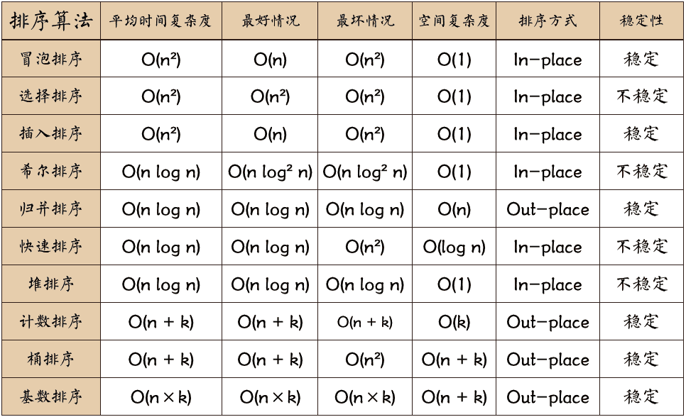

本系列算法整理自：https://github.com/hustcc/JS-Sorting-Algorithm
同時にウィキペディアも参考にして、いくつか補充を行った。
ソートアルゴリズムは『データ構造とアルゴリズム』の中で最も基本的なアルゴリズムの一つである。
ソートアルゴリズムは内部ソートと外部ソートに分類できる。内部ソートはデータレコードをメモリ内でソートするものであり、外部ソートはソートするデータが非常に大きく、一度にすべてのソートレコードを収容できないため、ソート処理中に外部メモリへのアクセスが必要となるものである。一般的な内部ソートアルゴリズムには、挿入ソート、シェルソート、選択ソート、バブルソート、マージソート、クイックソート、ヒープソート、基数ソートなどがある。一枚の図でまとめると：

以下の画像をクリックして拡大画像を表示：

時間計算量について
平方オーダー (O(n2)) ソート 各種の単純なソート：直接挿入、直接選択、バブルソート。
線形対数オーダー (O(nlog2n)) ソート クイックソート、ヒープソート、マージソート。
O(n1+§)) ソート、§ は 0 と 1 の間の定数である。シェルソート
線形オーダー (O(n)) ソート 基数ソート、その他にバケットソート、ビンソートがある。
关于稳定性
安定なソートアルゴリズム：バブルソート、挿入ソート、マージソート、基数ソート。
安定ではないソートアルゴリズム：選択ソート、クイックソート、シェルソート、ヒープソート。
名词解释：
- n：データ規模
- k：「バケツ」の数
- In-place：定数メモリを占用し、追加メモリを占用しない
- Out-place：追加メモリを消費
- 安定性：ソート後に2つの等しいキー値の順序が、ソート前のそれらの順序と同じであること